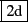

Table->new spreadsheet menu to add a spreadsheet level.
You will see a small configuration screen where you can change
the number of rows/columns, if an attached graph is displayed,
and also a variable name that you can use to get values
from commandlines outside of the spreadsheet (using the matrix notation,
e.g. a[1,2] will return the value of the cell at row 2, column 3
in xcas syntax mode, or at row 1, column 2 in other syntax modes).
You can modify the spreadsheet configuration by hitting the
status line above the cells or with the
spreadsheet File->variable name menu later).
If you have choosed to display the graph inside the spreadsheet
configuration, it will dynamically
display all cells that evaluate to a graphic object.
You may also display all the graphic
objects of the spreadsheet in a separate window, either in 2-d or in 3-d by
hitting the
 or
A cell may contain
a fixed value (any valid Xcas object: integer, real, symbols,
algebraic objects, strings, ...) or a formula depending on other
cells. The syntax for formulas is the same as for many spreadsheet,
begin with a =, then enter an algebraic expression where
other cells are represented using a symbol made of the column
name (e.g. A) and the row number (e.g. 1). When copying cells,
cell dependance in a formula is considered relative
unless you write a dollar ($) sign before the column name or
row number. You can enter an area instead of a cell name, an area
is always a rectangular area, it is made of two cell names separated
by .. representing opposite vertices of the rectangular area.
To enter a new value or formula in a cell, click on the cell, then enter your value or formula with the keyboard. As soon as you type a normal character, the focus will move from the sheet to the commandline above the sheet. To help enter formula, you can use the mouse to select a cell or a cell area. Once the value or formula is correct press the enter key to validate it. You can cancel your edit at any time by pressing the Esc key.
To modify a cell value, click on the cell so that the value or formula is displayed in the commandline above, then click in the commandline, modify it and press Enter (or Esc to cancel).
You can move in the sheet using the mouse or the direction keys, or
using the ``goto'' input value at the topleft of the sheet. Just enter
a cell name then enter to move there. If the cell does not exist,
the sheet will be enlarged to make it exist. You can also enter
an area in the ``goto'' input value to select this area without the
mouse. You must use the ``goto'' input value to make special
selections that are not connected areas, for example A1..B3,D,F will
``select'' the tabular with rows 1 to 3 and columns A, B, D and F.
You can copy and paste a rectangular area with the mouse like this:
select the rectangular area with the mouse, click on the target cell,
click on the commandline, type Ctrl-U to erase the previous
value then click on the middle button and type enter.
If you want to copy a cell formula to an area of the spreadsheet,
push at the right bottom part of the cell (when the mouse is on the
correct area of the cell, it will display a different cursor)
and move the mouse over the area you want to
copy, then release the mouse.
You can also copy cells using a menu item in the spreadsheet
Edit menu, you can either copy to the left, or to the bottom,
or to a rectangular area previously selected with the mouse (in this
case the cell which was below the mouse when you pushed the button
will be copied to the rectangular area).
The spreadsheet can be saved, exported, imported, etc. using the
spreadsheet File menu. The spreadsheet is also saved
as part of the session (but not as a standalone spreadsheet)
when you save the whole session. When you load a session, the
spreadsheet will not be evaled automatically, you must reeval
it with the reeval button explicitely (or modify one cell).
Xcas does not provide filters for native binary spreadsheet formats,
but you can import spreadsheet from other softwares or data using
copy/paste or by saving them in the text CSV (comma separated values) format:
cells values must always be separated by the same character e.g. a comma, and
another character should be used to start a new row like a newline.
For example, you can select a spreadsheet area inside Open Office
and paste it inside Xcas.
If you want to import formulas instead of values,
use the Tools->Option menu of Open Office, find the spreadsheet Display item
and check Formulas. Select the area inside Open Office, then
paste at the same upper left cell position inside Xcas.
Alternatively you can save the spreadsheet in CSV format inside
Open Office with the File->Save as
menuitem, then select CSV in the choosebox below.
Then inside Xcas, use the File->Insert CSV menu item,
select the file, change the separators if Xcas made a bad guess.
Note that Xcas must use row numerotation starting
at 1 instead of 0 for Open Office CSV formula import (this is the default).
Click on the status line or select inside the Edit menu
for configuration and sheet modifications operations. Configuration
operations should be self-explanatory, except for matrix fill cells :
when entering a matrix in the commandline,
you can choose between two modes, either the matrix will fill
a rectangular area of cells, or it will fill only one cell.
The Stats
menu is useful to make statistic plots in the corresponding graph.
When you make a graph using this menu, you will have to select
the data area where the statistic function will be applied (e.g.
a polygonplot on A1..B10) and a target cell. The target
cell is a regular cell which was empty and will contain the formula
defining the graphic object that will be displayed. If you check the
value box, the graph will not change later, but if you don't check
the value box and modify
one data cell later, the graph will be updated like any cell
depending on this data cell would be.